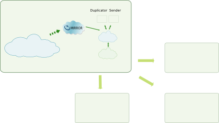
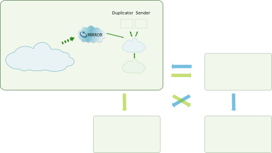
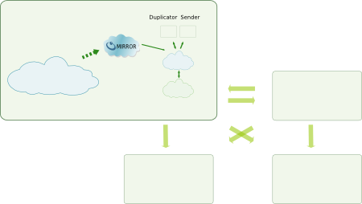

Section Summary: Disk Based WAN Replication
Overview
Geographically distributed applications tend to become common nowadays. The main challenge introduced by such deployment is the WAN which introduces latencies and low bandwidth.
This module offers a transparent solution providing cluster interconnection with multi-master and atomic behavior while providing high performance.
By relying on GigaSpaces' Mirror component no change is required to connect remote clusters together. Gateway components receive deltas of changes from Mirror components and act as unique connection points between clusters over the WAN.
Architecture
Supported Topologies
A topology is the sum of all sites that are part of a deployment. Each master site replicates changes to all destination sites.
Single master

In single master topology only one site propagates changes to all others.
Multi-owner master

In multi-owner master topology multiple sites propagate changes to all others but each master is responsible for its own subset of the global data. An identified object can only be modified by a single master site.
Multi master

In multi master topology multiple sites will propagate changes to all others. Concurrent modifications must be coordinated between master sites (for instance by relying on the gateway-lock-manager module).
Architecture components

The Gateway infrastructure is composed of 2 main components:
- the Mirror
- the Gateway
The Mirror Component
The Mirror component is the entry point in the Gateway infrastructure. Changes are received asynchronously as batches to be propagated without impact on the original cluster. The mirror is State-less.
The Gateway Component
The Gateway component is the unique connection between clusters and act as a redo-log for changes to be replicated. All states are kept in a primary-backup synchronously persisted space.
Processing is performed by sub-components:
- Duplicator
- Sender
- Propagator
Application Workflow
Cluster (source)
A client performs operations on the cluster.
Mirror component (source)
- Changes are asynchronously sent to the Mirror as a batch of BulkItem Objects and delegated to our BulkDataPersister implementation.
- BulkItems are filtered (resonance handling), converted to ExternalEntry, eventually serialized and compressed then encapsulated in an object which is sent to the Gateway component.
Gateway component (source)
- The Duplicator sub-component creates one reference object per destination site with a field identifying the destination.
- The Sender sub-component take this new Reference object, populates its content using the referenced object and send it to the destination Gateway component.
Gateway component (destination)
The Propagator sub-component take the object and propagates all changes, as ExternalEntry, to the local cluster.
Mirror component (destination)
- Propagated changes are asynchronously batched to the Mirror component (resonance effect).
- Our BulkDataPersister implementation notices those objects have just been introduced and filters them.
Features
FIFO support
FIFO is supported and all cluster changes are propagated in the correct order, accordingly to the GigaSpaces FIFO support.
Atomicity
Atomicity is ensured and all changes performed under a transaction will be propagated in an 'all or nothing' unit.
Filtering
Changes are replicated from a site to another can be filtered using pluggable logic. Each destination site may have a different filtering configuration.
Limitations
Replication
Only non-transient objects will be replicated to destination sites.
FIFO support
As GigaSpaces doesn't ensure FIFO across partitions Gateway doesn't ensure this either.
Lease
Lease are propagated as Forever.
Transaction usage
Clients interacting with a cluster connected to a Gateway cannot create transaction over different clusters. A transaction must use a single cluster.
Transactions merged in a single batch
Batches of changes sent to the BulkDataPersiter by the Mirror do not allow splitting changes as part of multiple transactions. As a consequence whole batches will be propagated atomically (under a distributed transaction). This might include changes originally not under a transaction or several transactions merged.
Constraints on type definition
If you are either using LockManager or the distributed transaction atomicity feature then all your types must provide version metadata through SpaceVersion annotation.
Some scenarios might propagate changes twice if the SpaceVersion metadata is not provided.
Type definition and LockManager
The type of an Object being locked using the LockManager must be known to all involved clusters. This can be done by:
- adding their definition to the cluster classpath
- introducing their definition using snapshot before their first manipulation by the LockManager
Class definition
Due to a GigaSpaces limitation, when you want to use a POJO object, you have to introduce its definition in your cluster. This limitation manifests under specific scenario (for instance, using Hibernate persistency in a mirror used on a destination site). Please consider carefully if you need to apply this workaround or not. GigaSpaces will fix this issue in an upcoming release (8.0).
Type definition introduction must be performed at cluster startup. The following code introduces the definition of your classes in the cluster. You have to copy it in your cluster's PU (pu.xml file).
<?xml version="1.0" encoding="UTF-8"?> <beans xmlns="http://www.springframework.org/schema/beans" xmlns:xsi="http://www.w3.org/2001/XMLSchema-instance" xmlns:os-core="http://www.openspaces.org/schema/core" xsi:schemaLocation="http://www.springframework.org/schema/beans http://www.springframework.org/schema/beans/spring-beans.xsd http://www.openspaces.org/schema/core http://www.openspaces.org/schema/core/openspaces-core.xsd"> <!-- Define your beans here--> <bean id="" ... /> <!-- Define your space here --> <os-core:space id="simpleEDSTestDest" url="/./simpleEDSTestDest" /> <os-core:giga-space id="simpleEDSTestDestGS" space="simpleEDSTestDest" /> <!-- Bean for snapshoting the POJOs --> <bean id="spaceInitBean" class="fr.fastconnect.gigaspaces.SnapshotEntries"> <constructor-arg ref="simpleEDSTestDestGS" /> <constructor-arg> <list> <value>fr.fastconnect.gateway.model.ClassToSnapshot1</value> <value>fr.fastconnect.gateway.model.ClassToSnapshot2</value> <value>fr.fastconnect.gateway.model.ClassToSnapshot3</value> </list> </constructor-arg> </bean> </beans>
And add the following class to your PU:package fr.fastconnect.gigaspaces;
import java.util.List; import java.util.logging.Level; import java.util.logging.Logger; import org.openspaces.core.GigaSpace; public class SnapshotEntries { private static final Logger log = Logger.getLogger("YOUR_LOGGER_DEFINITION"); private GigaSpace space; private List<String> classesToSnapshot; public void setSpace(GigaSpace space) { this.space = space; } public void setClassesToSnapshot(List<String> classesToSnapshot) { this.classesToSnapshot = classesToSnapshot; } public SnapshotEntries(GigaSpace space, List<String> classesToSnapshot) { log.info("Initialising SnapshotEntries class"); if (log.isLoggable(Level.FINER)) { log.finer("Number of classes to snapshot: " + (classesToSnapshot != null ? classesToSnapshot.size() : "null")); } if (classesToSnapshot != null) { for (String classToSnapshot : classesToSnapshot) { try { Class<?> clazz = Class.forName(classToSnapshot); Object newInstance = clazz.newInstance(); space.snapshot(newInstance); if (log.isLoggable(Level.CONFIG)) { log.config("Snapshoting class :" + newInstance.getClass().getName()); } } catch (Exception e) { log.log(Level.SEVERE, "An error occured when snapshoting classes: " + e.getMessage(), e); } } } } }
FIFO Support propagation
The GigaSpaces Gateway only propagates FifoSupport.ALL and FifoSupport.OFF. FifoSupport.OPERATION is propagated as FifoSupport.OFF.
Complex Objects
If you use complex objects (an object having a field of another type not provided by the JVM), you have to disable the compression feature. You can do that by modifying the file compressor.xml in the mirror's pu to use the "NeverCompressionStrategy" for the bean compression-strategy. Here is how the file should look like:
<?xml version="1.0" encoding="UTF-8"?> <beans xmlns="http://www.springframework.org/schema/beans" xmlns:xsi="http://www.w3.org/2001/XMLSchema-instance" xsi:schemaLocation="http://www.springframework.org/schema/beans http://www.springframework.org/schema/beans/spring-beans.xsd"> <bean id="serializer" class="fr.fastconnect.gateway.serialization.implementation.CustomSerializer" /> <bean id="compressor" class="fr.fastconnect.gateway.compression.implementation.ZipCompressor" /> <bean id="object-compressor" class="fr.fastconnect.gateway.compression.ObjectCompressor" > <constructor-arg ref="serializer" /> <constructor-arg ref="compressor" /> </bean> <!-- Here is the strategy to use if you plan to have complex objects --> <bean id="compression-strategy" class="fr.fastconnect.gateway.compression.strategy.implementation.NeverCompressionStrategy" /> </beans>
.NET client
.NET client must have the POJO definition class in the JVM's classpath. To add a jar in the classpath, see the page: http://www.gigaspaces.com/wiki/display/XAP71NET/Jvm+Configuration. It explains how to modify your App.config file.
Moreover, the space must have the POJO definition for the complex objects if you use a database. For that, you have to snapshot all the complex objects in all your clusters at the start of the cluster.
Configuration
Gateway components have to be configured to match your infrastructure.
The main configuration parameters that will need to be adapted are:
- your cluster Mirror url parameter to point to the Mirror PU
- gateway PU cluster - to point to your local cluster
- jdbc.url to point to the correct H2 instance
Mirror PU
Mirror default PU can be configured by modifying mirror/META-INF/spring/pu.properties. All properties are optional. Here is an example of properties you can modify:
# Embedded mirror space. # Following properties can be set: # mirror.url (optional, default '/./mirror-service') # mirror.lookup-groups (optional, default null) # mirror.lookup-locators (optional, default null) # Remote gateway space. # Following properties can be set: # gateway.url (optional, default 'jini://*/*/gateway') # gateway.lookup-groups (optional, default null) # gateway.lookup-locators (optional, default null) # gateway.security-enabled (optional, default false) # gateway.username (optional, default null) # gateway.password (optional, default null)
mirror. properties relates to embedded mirror space started by the mirror component.
gateway. properties relates to the gateway space started by the gateway component.
Gateway PU
Gateway PU can be configured by modifying gateway/META-INF/spring/pu.properties. All properties are optional. Here is an example of properties you can modify:
# Gateway configuration # master (optional, default 'true') # filtering.enabled (optional, default 'false') # Embedded gateway space. # Following properties can be set: # gateway.url (optional, default '/./gateway') # gateway.lookup-groups (optional, default null) # gateway.lookup-locators (optional, default null) # gateway.security-enabled (optional, default false. If set to true, provide the security.username and security.password properties) # security.username=user # security.password=password # Remote local cluster. # Following properties can be set: # cluster.url (optional, default 'jini://*/*/cluster') # cluster.lookup-groups (optional, default null) # cluster.lookup-locators (optional, default null) # cluster.security-enabled (optional, default false) # cluster.username (optional, default null) # cluster.password (optional, default null) # Gateway persistence # Following properties can be set: # jdbc.driver (optional, default 'org.h2.Driver') # jdbc.url (optional, default 'jdbc:h2:tcp://localhost:8043/~/persistenceDataSource;CACHE_SIZE=262144;ACCESS_MODE_DATA=rws;WRITE_DELAY=0;LOG=2;TRACE_LEVEL_SYSTEM_OUT=0' # jdbc.port (optional, default '8043') # jdbc.username (optional, default 'sa') # jdbc.password(optional, default '')
master - controls whether this site will propagate modification to remote destinations or not.
security.username - defines the username to use when deploying the gateway space in secured mode (see gateway.security-enabled).
security.password - defines the password associated with the username when the gateway space is secured (see gateway.security-enabled).
gateway. - properties relates to the embedded gateway space started by the gateway component.
cluster. - properties relates to the local cluster.
jdbc. - properties relates to underlying database used for Gateway persistence.
 If LOOKUPLOCATORS is not set then you must use a different gateway name for each site. Otherwise a source gateway will propagate changes to itself.
If LOOKUPLOCATORS is not set then you must use a different gateway name for each site. Otherwise a source gateway will propagate changes to itself.
Accessing a secured cluster
The Gateway Processing Unit must be configured to interact with a secured cluster.
Security can be enabled by setting the property 'cluster.security-enabled' to true in pu.properties. Modify bean cluster-giga-space in pu.xml to provide correct credentials.The provided user must have all rights.
...
<fc-os:spaceretry id="cluster-space-retry" max-retry-init="1" wait-time="5000">
<os-core:space id="cluster-space" url="${cluster.url}" lookup-groups="${cluster.lookup-groups}" lookup-locators="${cluster.lookup-locators}">
<os-core:security secured="${cluster.security-enabled}" username="${cluster.username}" password="${cluster.password}" />
</os-core:space>
</fc-os:spaceretry>
...
Accessing a secured gateway
The Mirror Processing Unit must be configured to interact with a secured gateway.
Security can be enabled by setting the property 'gateway.security-enabled' to true in pu.properties and supplying the correct credentials for 'gateway.username' and 'gateway.password'. The provided user must have all rights.
Filtering
Each site can be configured to filter a subset of modifications to be propagated to an identified remote site.
gateway/META-INF/spring/fr/fastconnect/gateway/core/filters.xml
To add your own filter for a particular remote site modify the predefined filters bean to reference this site url associated with a list of filter implementation. The key url must match the url used when adding a destination to the Gateway without jini:// protocol and options (after '?'). i.e. if the added destination url is jini://host:port//gateway?someOptions* then the key must be host:port//gateway*
...
<util:map id="filters">
<entry key="localhost/*/gateway" value-ref="your-filters" />
</util:map>
...
The bundled default implementation are:
- TypeFilter
- FieldValuesFilter
See below for an example on how to use these filters:
<util:map id="filters"> <entry key="localhost/*/gateway" value-ref="specific-filters" /> </util:map> <util:list id="specific-filters"> <ref bean="type-filter" /> <ref bean="field-values-filter" /> </util:list> <bean id="type-filter" class="fr.fastconnect.gateway.filtering.implementation.TypeFilter"> <constructor-arg> <util:set> <value>com.company.TypeToFilter</value> </util:set> </constructor-arg> </bean> <bean id="field-values-filter" class="fr.fastconnect.gateway.filtering.implementation.FieldValuesFilter"> <constructor-arg value="com.company.TypeToFilter" /> <constructor-arg value="field" /> <constructor-arg> <list> <value>a</value> <value>b</value> </list> </constructor-arg> </bean> ...
Enabling filtering
Filtering is disabled by default. To enable filtering edit gateway/META-INF/spring/pu.properties and set filtering.enabled to true.
Failure strategy
Decision to filter a change when filtering logic fails is abstracted through interface FilteringFailureStrategy. You can plug your own logic by modifying META-INF/spring/fr/fastconnect/gateway/core/filters.xml in the Gateway PU with: ...
<bean id="filter-manager" class="fr.fastconnect.gateway.filtering.FilterManager"> <constructor-arg value="${filtering.enabled}" /> <constructor-arg value="classpath:META-INF/spring/fr/fastconnect/gateway/core/filters.xml" /> <constructor-arg><bean class="fr.fastconnect.gateway.filtering.strategy.implementation.YourOwnFilteringFailureStrategy" /></constructor-arg> </bean> ...
Bundled implementation are:
- AlwaysAcceptFilteringFailureStrategy
Runtime configuration reload
Filtering configuration can be reloaded at runtime using the Gateway MBean.
Enabling the LockManager component
To enable the LockManager component simply bundle lock-manager and monitoring-lock-manager jar in the gateway processing unit.
Deployment
(!)Both PUs rely on H2 dependency. As GigaSpaces is bundled with an old H2 jar you will have to manually delete it (from $GIGASPACESHOME/lib/platform/jdbc) to prevent incompatibility issues.
Quick deployment
A simple deployment consists of deploying a master and a slave site. Following are the steps for deploying the master site:
- Launch your GSM and GSCs (GSCs depends on the topology of your cluster. Say you have a cluster with 2 partitions and 1 backup per partition, you need at least 5 GSC, 2 for the cluster, 2 for the gateway and 1 for the mirror)
- Deploy the PUs (your cluster, the gateway "gateway-gateway-1.1.2-pu.jar" and the mirror "gateway-mirror-1.1.2-pu.jar)
- Configure the topology of the site (ie. add a link between the master site and the gateway site).
For the slave site:
- Launch your GSM and GSCs (GSCs depends on the topology of your cluster. Say you have a cluster with 2 partitions and 1 backup per partition, you need at least 4 GSC, 2 for the cluster and 2 for the gateway. As this site is a slave site, and don't need to deploy the mirror)
- Deploy the PUs (your cluster and the gateway "gateway-gateway-1.1.2-pu.jar"
Processing units deployment
Gateway infrastructure is composed of 2 PUs per site, on top of the cluster itself.
PUs are logically connected. Unless you launch the deployment processes in background, you have to deploy the PUs in this order:
- the PU of the cluster
- the PU of the gateway
- the PU of the mirror
Take a look at the configuration details before deploying PUs. The Mirror PU is needed only for a master site. You must not deploy it for a non master site.No configuration files are used to specify destinations of a site. Gateway topology (connections between Gateway) is created dynamically the first time a site is set up.
Adding a new destination site
Procedure to add a new site consists of three phases:
- topology modification
- persistence layer duplication
- site start-up
Topology modification
To integrate a new site in a topology add this new site as destination to all master sites. Sites can be dynamically interconnected by using the topology-modifier script. It takes add/remove as first argument, source Gateway as second argument and destinations Gateway as other arguments
../topology-modifier add jini://localhost/./gateway-paris jini://localhost/./gateway-ny jini://localhost/./gateway-tokyo
This sample will add jini://localhost/./gateway-ny and jini://localhost/./gateway-tokyo as destinations to jini://localhost/./gateway-paris.
After this step all master sites will start generating modifications for the new destination.
Warning! If the source or the destination Gateway is secured, you have to provide the credentials in the URL like this:
jini://localhost/./gateway-paris?secured=true&username=user&password=password
Persistence layer duplication
Module gateway-tools/gateway-duplication-db provides the ability to dump a database to an xml file and restore another database from this xml file using JDBC technology.
To dump a database:
cd bin duplicateDB JDBCDriver.jar JDBCDriverClassName export filename JDBCDriverURL USERNAME [password]
To restore a database:
cd bin
duplicateDB JDBCDriver.jar JDBCDriverClassName import filename JDBCDriverURL USERNAME [password]
Site start-up
The new site can now be started. Cluster will start containing all information from the persistence layer then modifications changes will be propagated from the local Gateway. Modifications older than duplicated persistence layer content can be applied to this cluster (time to duplicate the persistence layer and start the site) but state and coherency will be ensured at anytime.
Removing an existing destination site
A site can be dynamically removed from the topology, as follows:
../topology-modifier remove jini://localhost/./gateway-paris jini://localhost/./gateway-ny jini://localhost/./gateway-tokyo
This sample will remove jini://localhost/./gateway-ny and jini://localhost/./gateway-tokyo from destinations of jini://localhost/./gateway-paris.
You can remove all the destinations site at once with the following command:
./topology-modifier removeAll jini://localhost/./gateway-paris
Listing destination sites
If you want to check the configuration of a site, the topology-modifier script has the option 'list'
../topology-modifier list jini://localhost/./gateway-paris
This sample lists all the destinations configured with the site jini://localhost/./gateway-paris.
LockManager peers configuration
When a Gateway PU is deployed the underlying LockManager peer is stopped and un-configured. To allow Lock creation peers will have to be started. During start-up a peer ensures that all remote peers appearing in mappings define the same mappings. If not startup will fail.
Mappings can be added/removed only when a peer is stopped either using JMX or LockManagerPeer methods.
Site shutdown
To shutdown a site you will have to go through following steps:
- remove this site from all other site topology (by following the procedure previously described)
- shutdown this site cluster to ensure no more batches have to be sent to the Mirror
- shutdown this site's mirror
- modify all peers' mapping
- shutdown this site's gateway
To modify peer's mapping you will have to follow a number of steps. In latter description involved peers refers to peer involved with mapping adding/removal.
- stop all peers
- wait for all locks on involved peers to be unlocked
- wait for all modifications performed through locks to be propagated to involved peers
- performs mapping changes on all peers
- restart all peersStartup sequence will not ensure that previously mapped peers are not mapped anymore if they are not part of the topology. This has to be verified externally.